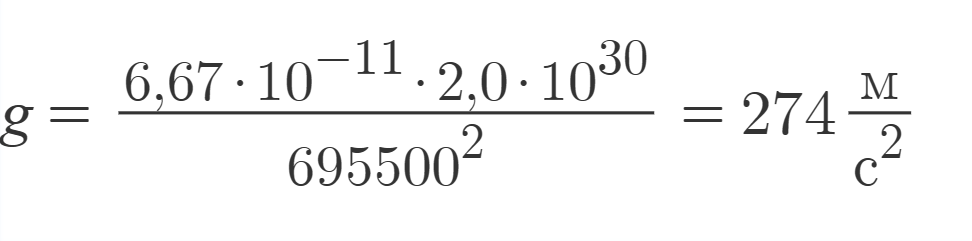

Теория
На данной странице Вам представлена вся необходимая теоретическая информация, которая касается темы "Определение ускорения свободного падения на телах Солнечной системы! Информация будет разбита на несколько разделов для более комфортного чтения.
Задолго до появления всеми известного Исаака Ньютона и его предшественника - Галилео Галилея, с момента появления «культа» философов, которые пытались объяснить фундаментальные физические действия и по сей день, учёные изучают параметр – ускорение свободного падения. Не имея представления об этом параметре, человечество не могло бы прийти к тем открытиям, которые расширяют наш кругозор в изучении мира. В современной науке, главным параметром стало – ускорение свободного падения на телах Солнечной системы. Готовясь к посещению и дальнейшему освоению планет нашей родной системы, мы обязаны выявить максимум знаний из наших открытий, которые начинаются именно с определения ускорения свободного падения на планете.
Ещё в XVII веке, учёный Галилео Галилей смог выдвинуть гипотезу о том, что все тела движутся не "просто так", а с постепенным увеличением собственной скорости. Так учёный вывел следующие законы падения тел для идеального случая: все тела при падении движутся одинаково; начав падать одновременно, они движутся с одинаковой скоростью; движение происходит с так называемым "постоянным ускорением"; темп увеличения скорости тела не меняется, т.е. за каждую последующую единицу времени скорость тела меняется на одну и ту же величину.
Следующим этапом в развитии этой теории стало откратие Исаака Ньютона, который на протяжении многих лет понимал, что тело не может притягиваться к Земле, при этом не имя никакой обратной силы. Оказывается, Ньютон был прав и он сам это доказал! С помощью параметров: масса тела, масса Земли, которую впервые посчитал Генри Кавендиш в 1798 году, а также гравитационная постоянная, Ньютон выводит "Закон всемирного тяготения". Если обратиться к понятию «сила тяжести» и воспользоваться формулой Закона Всемирного тяготения, то можно получить формулу ускорения свободного падения.
Закон всемирного тяготения:
F - сила тяготения [H]
M - масса 1-ого тела (как правило планеты) [кг]
m - масса 2-ого тела [кг]
R - расстояние между двумя телами [м]
G - гравитационная постоянная
G = 6,67 · 10−11м3 · кг−1 · с−2
Исаак Ньютон (1643 - 1727 гг)
Закон всемирного тяготения:
g - ускорение свободного падения [м/с^2]
M - масса планеты [кг]
R - расстояние между телами [м]
G - гравитационная постоянная
G = 6,67 · 10−11м3 · кг−1 · с−2
Ниже представлена таблица, в которой будут отображены приблизительные значения ускорения свободного падения, а также формулы, по которым эти значения были выведены. Для проведения различных расчетов, данные формулы и их значения соответственно применяются по сей день физиками со всего мира!

| Ускорение свободного падения | |
| Тело Солнечной системы | Формула ускорения |
| Меркурий |  |
| Венера | |
| Земля | |
| Марс | |
| Юпитер | |
| Сатурн | |
| Уран | |
| Нептун | |
| Плутон | |
| Луна | |
| Солнце |  |